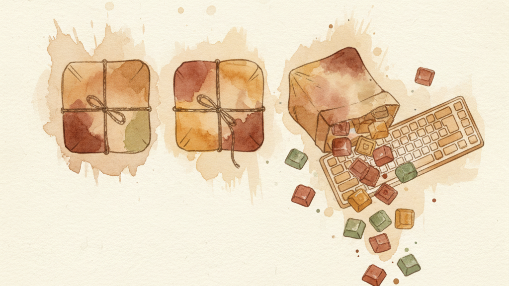

Packs are pre-built keyboard features you install from the Pack Gallery. Each one adds a specific capability — a new layer, a key behavior, or an integration. Install with one click, customize to fit your workflow, uninstall cleanly if it's not for you.
Open the Pack Gallery from the KeyPath menu bar icon or the app's main window.
Most packs are standalone — install one and it works immediately. Some build on each other:
A good starting point for most people: install Caps Lock Remap and Vim Navigation, then explore from there.
Driverless KeyPath automatically prepares Caps Lock when exactly one compatible keyboard is available. This reserves F18. See behavior and limitations before relying on these recipes.
Make Caps Lock actually useful. Tap it for a quick action (Escape, Backspace, or Hyper). Hold it for a modifier (Hyper, Control, Shift, or Meh). Pick your preferred combo in the pack settings.
Pairs well with everything — most users install this first.
Move Escape to a closer key like Caps Lock or Backtick. Useful if you've given Caps Lock a different job with the Caps Lock Remap pack.
Forward-delete, delete-word, and delete-to-line-start without reaching. Hold your Leader key + Delete for the enhanced variants. Regular Delete still works normally. Requires Vim Navigation.
Press both Shift keys together to toggle Caps Lock. Handy when you've remapped Caps Lock to something else and occasionally still need it.
Hold Hyper (or Leader + L), press a letter to launch an app or open a URL. Drag apps onto keys to assign them — the overlay shows your assignments visually.
Works standalone (via Hyper) or as part of the Vim Navigation layer system.
Choose which physical key activates your layers — Space (default), Caps Lock, Tab, or Backtick. This is the master switch for Vim Navigation and every layer pack that builds on it.
Press two adjacent keys simultaneously for instant actions — no modifier keys needed. Includes presets like S+D for Escape, D+F for Enter, J+K for Up, and more. Inspired by Ben Vallack's chording approach.
Hold F for arrow keys under your right hand — I/J/K/L in an inverted-T layout that matches your physical arrow keys. Plus Home, End, Page Up, and Page Down on surrounding keys. Tap F normally to type.
Installed by default. This is the simplest way to navigate text without leaving the home row. Conflicts with Home Row Mods (both use F as a hold key) — use one or the other.
Hold Space to enter a navigation layer: H/J/K/L become arrow keys, Y/P are copy/paste, U is undo, / is find. Release Space to type normally. This is the foundation pack — most other layer packs build on top of it.
Even if you've never used Vim, the arrow key layout is worth learning. Your fingers never leave the home row.
A complete navigation system inspired by keyboard minimalist Ben Vallack. Hold an index finger key to transform your keyboard into a navigation surface, with modifiers on the top row so nothing competes for space.
Installs three coordinated collections: Navigation Layer, Top-Row Modifiers, and Index-Finger Layer Toggles. This is an opinionated alternative to the default Vim Navigation — use one or the other, not both.
Snap windows to halves, corners, or full screen with keyboard shortcuts. Hold Space + W, then pick a position: L/R for halves, U/I/J/K for corners, brackets for displays, comma/period for Spaces.
Requires Vim Navigation and Accessibility permission.
Exposé, Show Desktop, Notification Center, and desktop switching — each one key away. Hold Space + M for Mission Control. Comma and period switch desktops. Requires Vim Navigation.
Arrow keys and Delete at 3x speed. Regular typing stays steady so you don't get accidental repeats. Great for scrolling through code, navigating spreadsheets, and editing long documents.
Your right hand becomes a number pad (U/I/O = 7/8/9, J/K/L = 4/5/6, M/comma/period = 1/2/3, N = 0). Left hand gets operators (+, −, ×, ÷, Enter). Hold Space + semicolon to activate.
Great for spreadsheets, calculators, and CSS without reaching for the number row. Requires Vim Navigation.
Programming symbols under your home row — brackets, operators, and the shifted number row. Hold Space + S to activate. Choose from preset layouts. Requires Vim Navigation.
The Function pack is unavailable in driverless mode because it includes media and brightness outputs. Ordinary F1–F12 mappings remain supported. See Function pack availability.
Tap your home row keys normally. Hold them for modifier keys — A for Control, S for Option, D for Shift, F for Command (and mirrored on the right hand). Every keyboard shortcut stays under your fingers.
This is one of the most powerful features in KeyPath, but it takes some adjustment. The hold timing slider helps you find the sweet spot between accidental triggers and comfortable activation.
Hold any symbol key slightly longer to type its shifted variant — tap hyphen for -, hold for _. Tap apostrophe for ', hold for ". No Shift key needed.
Make your keyboard sound like a mechanical keyboard. Choose from five switch profiles — Cherry MX Blue (clicky), Cherry MX Brown (tactile), Cherry MX Red (linear), NK Cream (thocky), or Bubble Pop (playful). Each profile plays authentic audio samples on every keypress.
Enable in Settings > Typing Sounds and pick your profile. No pack install needed — it's a built-in setting.
Shows your KindaVim mode (Normal, Insert, Visual) in the keyboard overlay header. The overlay adapts automatically — Vim key hints in Normal mode, clean keyboard in Insert mode.
Display only — no key remapping. Requires the KindaVim app.
A live timeline of every keypress, tap-hold decision, and layer change. Useful for tuning timing, debugging remaps, and understanding what Kanata is actually doing with your keystrokes.
Display only — no key remapping.